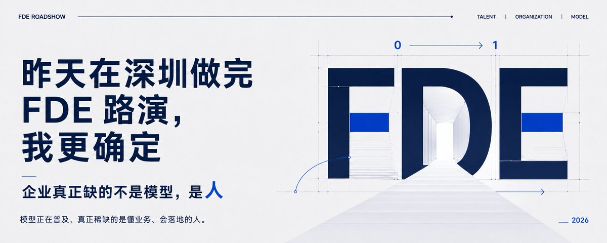
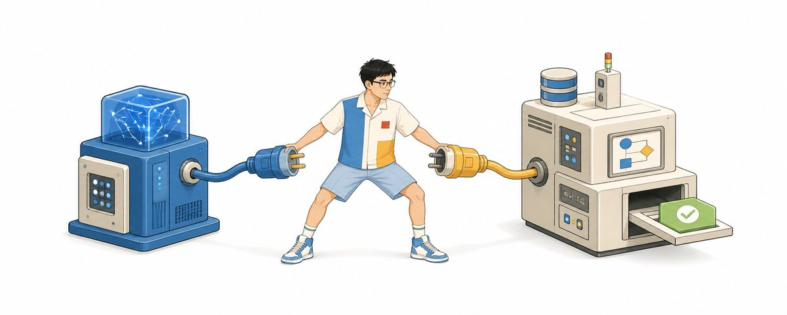
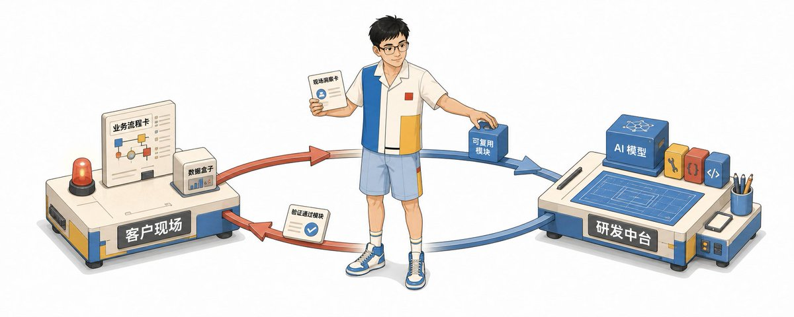
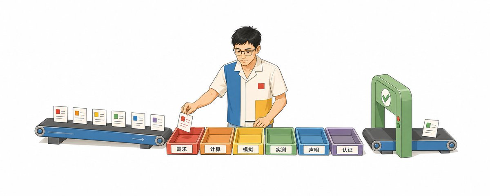
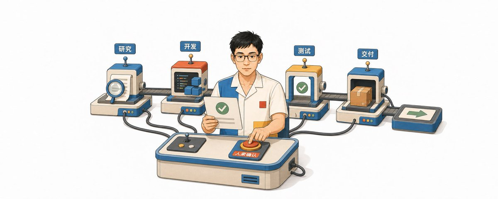

昨天在深圳做完 FDE 路演，我更确定：企业真正缺的不是模型
- 分类
- AI
- 来源
- X · @miles_mazy
- 原文
- 整理
- 原文链接
- 原文
先看这五句
- 企业缺的不是更强的模型，而是能把模型、业务、数据和组织责任接到生产结果的人。
- FDE 既是岗位，更是现场与研发两头同转的机制；只下沉会变成高级实施。
- 工程能力是门槛，客户与商业能力决定上限。
- 证据要分级（需求/计算/模拟/测量/供应商声明/认证），不能互相冒充。
- Agent 能扩展执行，责任转不出去；人负责授权、合并和最终判断。

这是一份阅读笔记，不是路演逐页转载。原文从深圳一场给投资人和协会的 FDE 汇报写起：准备讲科研系统怎样配合落地，现场反复追问的却是更基础的问题——FDE 是一个人还是一套服务，更像销售还是工程师，程序员能不能转，企业又该怎么用这种人。
Demo 到生产
做一个 AI 演示已经很容易。拿几份文档做问答，用模型生成报告，接几个工具跑一段自动化，半天就能看到效果。真正进入企业，问题马上变了：资料有多个版本，数据散在不同系统，账号权限拿不到，业务规则只存在于老员工脑子里，模型答错以后没人知道该不该拦，上线后又没有人维护评测和成本。
模型回答得再漂亮，只要没有进入真实工作流，就没有产生业务结果。系统能够调用接口，只要权限、审批和失败恢复没做，企业也不敢让它执行。
企业真正缺的，是有人愿意把「模型能做什么」一路负责到「客户真的得到什么」。

OpenAI 对 FDE 的职责写得很直接：从客户发现、技术范围、系统设计、构建，一直负责到生产上线；成功也不以演示完成计算，而看生产采用、工作流变化，以及现场反馈有没有进入产品和模型路线。Anthropic 也在 Applied AI 下面配置工程、架构和部署相关角色。
单独补上其中一段，项目还是会卡。招一个算法工程师，可能解决模型问题，却没人确认业务目标；找一家咨询公司，可能得到一套方案，却没人把代码跑进生产；让销售推动项目，可能拿下订单，却把无法兑现的承诺留给交付团队。缺口巨大，指的不是招聘网站上少了多少简历，而是从兴趣走向结果的整条责任链都是空的。
岗位，也是回路
从名字看，FDE 当然是一个岗位：Forward Deployed Engineer。Forward 指向前部署、靠近问题现场；Engineer 则要求这个人真正参与构建和上线，不能只停在建议和协调上。把视角拉远，它更像一套把现场和研发连接起来的组织机制。

如果只有向下输出，FDE 很快会变成高级实施或驻场外包。每个客户重新写一遍，项目越多，公司越依赖堆人。如果只有向上汇报，现场又变成需求收集，客户等几个月才能看到一次产品排期。
两个循环要同时转：研发能力向现场下沉，现场成果向研发后台回流。项目里临时改通一个接口、处理一个例外，只能算解决了当下的问题。还要把这些做法拆开看：哪些只是这个客户的特殊配置，哪些可以抽成模板、组件、评测集或标准流程；再带着证据交给后台研发验证、入库和维护。
它们不一定全部做成软件产品。一套经过验证的数据字段定义、一份异常处理清单、一个行业术语映射、一组评测题，同样是研发资产。下一次遇到相似项目，团队不必照搬上一家客户的方案，也不用从零开始。
FDE 可以由一个人承担，也可以由一支小队共同承担。岗位怎么拆可以变，但必须有人从客户问题负责到生产结果，再把可复用的资产带回研发。如果项目上线以后就撤场，这条链其实还没走完。企业如果只改一个职位名称，没有改变部门之间的责任边界，就没有真正建立 FDE 能力。
门槛与上限
路演后最容易争论的问题：销售属性更重要，还是技术属性更重要。原文的答案很明确——工程能力是门槛，客户与商业能力决定上限。
没有技术能力，FDE 很容易变成会讲 AI 的销售。他能把模型、Agent 和私有化部署讲得很热闹，却无法判断数据能不能用、接口能不能接、模型为什么错、系统能不能上线。客户问一句「这个承诺怎么验收」，答案就只能回到漂亮的 PPT。
但一个技术很强、完全不愿意碰客户的工程师，也很难做好这件事。他可能写得出最复杂的系统，却不知道企业愿意为什么付钱，不知道哪位业务负责人承担结果，也不知道客户说「我们想做知识库」时，背后可能只是客服每天在几十份文件里找答案。
这里说的销售属性，和喝酒、应酬、催客户签字没有多少关系。FDE 得找出客户正在为什么付出代价，让不同角色愿意把真实流程和限制说出来，再把技术选择讲成范围、价值、风险和代价。客户压周期、压价格、压效果时，还得守住不能乱承诺的边界。这些事最后仍然要回到工程判断：该缩范围，还是这个系统根本做不到；本地部署要继续追问数据边界、并发和运维；想让 Agent 自动执行付款，就要把审批、幂等和回滚摆到桌面上。
程序员转 FDE，最该补的是客户发现、表达和谈判；销售或咨询转 FDE，最该补的是动手构建、数据、系统集成和生产责任。两边都不能靠 AI 假装已经会了。
六类证据
路演把「科研配合 FDE」放进来，不是为了学术包装，而是把证据、复现和审查纪律带进企业交付。企业 AI 项目有一个麻烦：很多结论看起来都像真的。模型说能提升效率，供应商说支持某项能力，工程师按参数估算吞吐，演示跑通了一批样本，客户又根据经验判断可以上线。如果不区分这些结论背后的证据，它们最后会被一起写进方案，仿佛可信度完全相同。

| 类型 | 它实际证明了什么 |
|---|---|
| REQUIREMENT | 客户或项目明确提出的要求 |
| CALCULATED | 根据公开模型和假设计算出来的结果 |
| SIMULATED | 使用记录下来的输入和条件完成的模拟 |
| MEASURED | 在可重现条件下实际观察到的结果 |
| SUPPLIER_DECLARED | 供应商或外部权威给出的声明 |
| CERTIFIED | 有明确认证记录支持的结论 |
根据并发和 Token 量算出的成本，只能叫计算结果；测试环境跑通，只能说明在那组条件下测到了；供应商写「支持私有化」，不代表已经通过客户自己的安全审查。一句话能不能进入交付方案，取决于它有什么证据，也取决于证据能不能被重新检查。
六条原则因此有了实际用途：数据优先、证据分级、可重现、可恢复、人类负责、隐私边界。一个 FDE 如果只留下代码，没有证据、决定和恢复方法，研发后台就无法判断哪些能力值得复用，换个人以后项目也会重新失忆。
人守门
路演最后一页留下一句值得继续验证的话：一个 FDE 带着一群 Agent，就能完成 AI 转型的交付。方向可以认，但要补上一个前提——Agent 可以扩展执行能力，责任转不出去。

以前，一个人很难同时完成客户研究、会议整理、方案比较、原型开发、测试、文档和项目复盘。现在这些工作可以拆给不同的 AI。但 AI 不知道客户没有写进文档的利益冲突，也不知道一句「原则上可以」到底算不算承诺。它不能自行决定哪些数据允许上传，不能代替负责人批准范围变化，更不能在项目失败时承担商业后果。
AI 可以提出、实现和审查，人负责授权、合并和最终判断。
原始材料可以由 Agent 整理，进入项目事实库之前必须由人确认；代码可以由 Agent 起草，进入生产之前必须经过测试和审批；报告可以由 Agent 生成，证据类型不能由它自行升级。未来的交付团队可能会很小：前面是少数能够进现场、懂业务、敢作技术判断的 FDE，后面连接研究、开发、测试和交付 Agent。人数可能变少，对领头那个人的判断力要求却会更高。
转型与企业侧
程序员怎么转
程序员转 FDE 的优势很明显：有工程基础，理解系统边界，也更容易识别一个 AI 演示离生产还有多远。真正困难的地方，是从「别人把需求写清楚，我负责实现」，转到「需求本身不清楚，我先判断什么值得实现」。
转型不必从背一份更长的技术栈开始。RAG、Agent、MCP、模型部署当然要学，但它们只是工具。更有效的办法，是完整跑一次小型交付：跟着一个实际使用者走完最近一次任务，记录输入、动作、判断、系统、输出和例外；再从中找一个高频、可测、失败后能人工接管的环节，做一个很小的版本。
过程中刻意训练四类产出：
- 一份能让客户纠正的现状判断；
- 一份有范围和验收条件的交付方案；
- 一个能够使用真实样本验证的最小系统；
- 一套讲清失败、修复和业务变化，并能回流研发后台的资产包。
这四样东西比「我学过十个 Agent 框架」更能证明你具备 FDE 能力。做 FDE 以后，沟通不再是开发前的准备工作，沟通本身就是系统设计的一部分。
企业要提供什么
企业最危险的做法，是把 FDE 当成一个「懂 AI 的万能驻场」。什么需求都交给他，所有部门都不提供负责人，最后再用「有没有做出一个智能体」验收。他可以还原流程、指出矛盾、给出方案、参与构建，却不能替业务部门确认规则，不能替数据 Owner 开放权限，也不能替管理层决定什么风险可以接受。
要让 FDE 产生价值，至少要提供四样东西：真实工作现场、能够使用的样本、有权作决定的人，以及允许从小范围验证的空间。
项目留下什么
项目做完以后，还得回头看有没有留下两层能力。对客户，要留下可接管的系统、数据标准、证据规则、评测集、运行手册和失败边界；对交付方的研发后台，要留下经过脱敏和抽象的模板、组件、行业规则及评测方法。前一层避免客户长期依赖驻场人员，后一层让下一次同类项目能够站在这次交付的结果上继续做。
商业模式可以分成效果付费、定制开发和私有化部署三层，但不该一上来全部购买。问题还没验证时，先做诊断或小范围验证；场景成立但系统差异很大，再进入定制开发；数据和基础设施真的有明确约束，才讨论私有化。按效果付费也必须先约定基线、归因和双方投入，否则「效果」只会变成新的争议。
判断 FDE 是否合格，可以问得很简单：他有没有深入真实流程，有没有亲手参与构建，有没有用证据说明结果，有没有把现场经验变成研发后台接得住的资产，有没有让客户内部团队逐渐减少对他的依赖。如果答案都是「没有」，这个岗位无论叫什么，本质上仍然只是销售、咨询或外包。
未来真正稀缺的，不只是会使用 AI 的人，而是能带着 AI 进入真实世界、把复杂问题做成可验证结果的人。